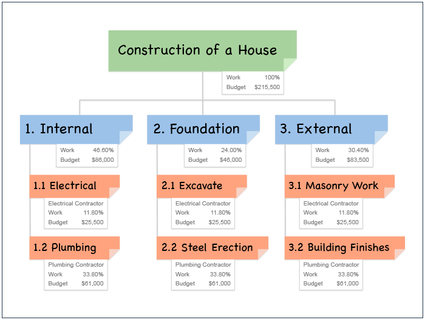

<div class="main-content">
    <div class="container-fluid">
        <div class="card">
            <div class="card-header card-header-info gray">
                <h3 class="card-title">Módulo 2: Gestión del alcance</h3>
                <!-- <p class="card-category">Created using Roboto Font Family</p> -->
            </div>
            <div class="card-body">
                <div id="typography">
                    <div class="card-title">
                        <h2>Documentación de requerimientos</h2>
                        <div class="container">
                            <h3><b>Definición</b></h3>
                            <div class="container">
                                <p class="justify-content">
                                    En la actualidad las organizaciones enfocadas al desarrollo de aplicaciones de
                                    software utilizan diferentes herramientas que permiten facilitar la fase de
                                    identificación de requerimientos, puesto que se presta mayor atención a las
                                    necesidades que se identifican en todas las fases del ciclo de vida del sistema;
                                    para así obtener un mejor aprovechamiento, entendimiento, y rendimiento al momento
                                    que entre en ejecución el sistema que se esté desarrollando.
                                </p>
                            </div>
                            <h3><b>Técnica para identificar Requisitos funcionales y no funcionales.</b></h3>
                            <div class="container">
                                <h4><b>Identificación de Requerimientos funcionales</b></h4>
                                <div class="container">
                                    <p class="justify-content">
                                        Los requerimientos funcionales son declaraciones de los servicios que proveerá
                                        el
                                        sistema, de la manera en que éste reaccionará a entradas particulares. En
                                        algunos casos,
                                        los requerimientos funcionales de los sistemas también declaran explícitamente
                                        lo que el
                                        sistema no debe hacer.
                                    </p>
                                    <p class="justify-content">
                                        Muchos de los problemas de la ingeniería de software provienen de la imprecisión
                                        en la
                                        especificación de requerimientos.
                                        Para un desarrollador de sistemas es natural dar interpretaciones de un
                                        requerimiento
                                        ambiguo con el fin de simplificar su implementación. Sin embargo, a menudo no es
                                        lo que
                                        el cliente desea.
                                        Se tienen que estipular nuevos requerimientos y se deben hacer cambios al
                                        sistema,
                                        retrasando la entrega de éste e incrementando el costo.
                                    </p>
                                </div>
                                <h4><b>Identificación de Requerimientos no funcionales</b></h4>
                                <div class="container">
                                    <p class="justify-content">
                                        Son aquellos requerimientos que no se refieren directamente a las funciones
                                        específicas que entrega el sistema,
                                        sino a las propiedades emergentes de éste como la fiabilidad, la respuesta en el
                                        tiempo y la capacidad de almacenamiento.
                                        De forma alternativa, definen las restricciones del sistema como la capacidad de
                                        los
                                        dispositivos de entrada/salida y la
                                        representación de datos que se utiliza en la interface del sistema.
                                    </p>
                                    <p class="justify-content">
                                        Los requerimientos no funcionales surgen de la necesidad del usuario, debido a
                                        las
                                        restricciones en el presupuesto, a las políticas de la organización, a la
                                        necesidad
                                        de interoperabilidad con otros sistemas de software o hardware o a factores
                                        externos
                                        como los reglamentos de seguridad, las políticas de privacidad, entre otros.
                                    </p>
                                    <p class="text-center">
                                        
                                    </p>
                                </div>
                            </div>
                            <h3><b>Aspectos a tener en cuenta en la identificación de requerimientos funcionales y no
                                    funcionales </b></h3>
                            <div class="container">
                                <p class="justify-content">
                                    Requerimientos básicos: se estructura su identificación al buscar respuestas a
                                    preguntas como:
                                </p>
                                <ul class="justify-content">
                                    <li>¿Cuál es el proceso básico de la empresa?</li>
                                    <li>¿Qué datos utiliza o produce este proceso?</li>
                                    <li>¿Cuáles son los límites impuestos por el tiempo y la carga de trabajo?</li>
                                    <li>¿Qué controles de desempeño utiliza?</li>
                                </ul>
                                <p class="justify-content">
                                    Siempre se debe comenzar con lo básico. Cuando se hacen preguntas y se reciben
                                    respuestas, se proporcionan antecedentes sobre detalles fundamentales relacionados
                                    con el sistema y que sirven para describirlo.
                                </p>
                                <p class="justify-content">
                                    Las siguientes preguntas son de utilidad para adquirir la comprensión necesaria:
                                </p>
                                <ul class="justify-content">
                                    <li>¿Cuál es la finalidad de la actividad dentro de la empresa?</li>
                                    <li>¿Qué pasos se siguen para realizarla?</li>
                                    <li>¿Dónde se realizan estos pasos?</li>
                                    <li>¿Quiénes los realizan?</li>
                                    <li>¿Cuánto tiempo tardan en efectuarlos?</li>
                                    <li>¿Con cuánta frecuencia lo hacen?</li>
                                    <li>¿Quiénes los realizan?</li>
                                    <li>¿Quiénes emplean la información resultante?</li>
                                </ul>
                            </div>
                            <h3><b>Identificación de elementos</b></h3>
                            <div class="container">
                                <p class="justify-content">
                                    Durante esta, se debe identificar muy claramente los siguientes elementos:
                                </p>
                                <ul class="justify-content">
                                    <li>Procesos</li>
                                    <li>Flujos de datos entre procesos</li>
                                    <li>Datos de cada flujo de datos</li>
                                    <li>Bases de datos</li>
                                    <li>Datos de las bases de datos</li>
                                </ul>
                            </div>
                        </div>
                        <h2>WBS (Estructura de descomposición del trabajo)</h2>
                        <div class="container">
                            <p class="justify-content">
                                Blog donde se publican las lecciones aprendidas en todas las actividades de desarrollo
                                de software. Busca ser una base de conocimiento para todos aquellos que queremos
                                no repetir nuestros errores ni los de otros. La idea es ayudarnos entre todos, gerentes
                                de proyectos,
                                programadores, arquitectos, tester etc.
                                Adicionalmente en los últimos años con mucho enfoque a las metodologías agiles, scrum,
                                kanban, etc.
                            </p>
                            <h4>
                                <ul>
                                    <li>
                                        <b>¿Qué hago cuando alguien pide una Estructura de Desglose del Trabajo (WBS) en
                                            un proyecto Ágil? ¿Debería correr por las colinas o debería explicar que una
                                            WBS está incorporada?
                                        </b>
                                    </li>
                                </ul>
                            </h4>
                            <h4><b>¿Características?</b></h4>
                            <div class="container">
                                <p class="justify-content">
                                    Es que un PEP es una característica común de la Planificación de Proyectos
                                    Tradicionales. Así que, si el entregable solicitado es tradicional, entonces
                                    posiblemente la persona que lo solicita tiene expectativas tradicionales. En cuyo
                                    caso
                                    sería mejor ir a algún lugar donde Lean-Agile sea bien entendido y apreciado.
                                </p>
                                <p class="justify-content">
                                    Pero tal vez no tengas que correr por las colinas. Tal vez ya esté produciendo un
                                    EDT en
                                    su proyecto Lean-Agile. Sólo llámalo de otra manera.
                                </p>
                            </div>
                            <h4><b>EDT tradicional</b></h4>
                            <div class="container">
                                <p class="justify-content">
                                    Un PEP es "Un desglose jerárquico detallado orientado a las tareas, que define los
                                    paquetes de trabajo y las tareas a un nivel muy bajo" (Agile Project Planning). Un
                                    PEP
                                    se utiliza para crear un diagrama de Gantt. Sólo hay que poner una fecha de inicio y
                                    fin
                                    a cada una de las tareas del PEP y se tendrá un programa de proyecto convencional.
                                </p>
                                <p class="justify-content">
                                    Un PEP tradicional refleja las creencias tradicionales sobre la división funcional
                                    del
                                    trabajo que conduce a un proceso de cascada y la suposición de que toda la
                                    planificación
                                    puede y debe hacerse por adelantado. Un EDT típicamente será una fase para el
                                    Análisis,
                                    y otras para el Diseño, Desarrollo, Prueba, Liberación, etc. Muchas de estas fases y
                                    subtareas producen resultados provisionales y son responsabilidad de un
                                    especialista.
                                </p>
                                <p>
                                    Como ejemplo aquí está una Estructura de Desglose del Trabajo (EDT) que obtuve del
                                    Sitio de Información y Entrenamiento de Gestión de Proyectos Basados en Principios.:
                                </p>
                                <p class="text-center">
                                    
                                </p>
                                <p class="justify-content">
                                    Para ser honesto, encuentro muchos de los ECP de ejemplo bastante poco interesantes.
                                    Para mí se centra en las cosas equivocada. Las responsabilidades de los roles
                                    funcionales, por ejemplo, PM, Desarrollo de Software
                                    Descripción del trabajo / gestión de tareas para las funciones, por ejemplo, los PM
                                    deben hacer Gestión de Riesgos.
                                </p>
                                <p class="justify-content">
                                    Entregas provisionales, por ejemplo, los casos de prueba de la unidad. Se encuentro
                                    poco interesante porque no creo que tenga que planearlas. En general puedo asumir
                                    que gente competente hará el trabajo para el que los contrate. Pero un EDT, como el
                                    diagrama de Gantt estrechamente relacionado, sugiere a aquellos con un proyecto
                                    tradicional inclinado a que el creador del EDT sepa lo que están haciendo. Por
                                    supuesto, eso no es necesariamente cierto, pero ahí lo tienes.
                                </p>
                            </div>
                            <h4><b>WBS ágil</b></h4>
                            <div class="container">
                                <p class="justify-content">
                                    Lean-Agile tiene un desglose de los paquetes de trabajo y tareas: el confiable Plan
                                    de Liberación. Sin embargo, este enfoque le da la vuelta al tradicional WBS de tres
                                    maneras:
                                    El enfoque en la funcionalidad entregada a la producción de manera colaborativa en
                                    lugar de entregables provisionales alineados con las responsabilidades de los roles
                                    funcionales.
                                    Dejar el trabajo a las profesiones del equipo en lugar de imprimir la descripción
                                    del trabajo en cada plan de proyecto.
                                </p>
                                <p class="justify-content">
                                    La aceptación de que la planificación debe perfeccionarse a lo largo del tiempo,
                                    desde el nivel más alto hasta el más detallado, en lugar de tratar de planificar
                                    todo al inicio del proyecto
                                    Un Plan de lanzamiento estilo XP mapea las épocas y las historias de los usuarios
                                    para dar una lista de las características que se construirán a lo largo del tiempo.
                                    Se trata de un PEP de alto nivel y un programa de proyecto en uno, de la misma
                                    manera que un diagrama de Gantt es una combinación de PEP y programa de proyecto.
                                    El enfoque Ágil significa que se empieza con un PEP de alto nivel y se termina con
                                    un PEP detallado. Se añaden detalles adicionales cuando es apropiado, por ejemplo,
                                    los equipos Scrum o XP harán un plan Sprint que incluya tareas detalladas. Todo esto
                                    es parte de la Planificación Ágil de Proyectos.
                                </p>
                                <p class="justify-content">
                                    Un PEP ágil tiene más probabilidades de ser fresco que un PEP tradicional porque se
                                    refina con el tiempo. En un equipo Ágil el plan, y por lo tanto el PEP,
                                    se refina de forma Iterativa Incremental a medida que se aprende más sobre el
                                    proyecto/producto. A medida que las nuevas características se hacen obvias, se
                                    añaden al Plan de lanzamiento. Cuando se hace obvio que una característica no es
                                    necesaria, entonces ese trabajo se elimina del plan.
                                    Así que si alguien te pregunta si tienes WBS para tu proyecto Agile, puedes decir
                                    con seguridad "No te preocupes. Lo tengo cubierto".
                                    Este post es parte de mi serie "¿Qué hago cuando...?". Por favor, déjame una línea o
                                    añade un comentario si tienes una pregunta que te gustaría que se respondiera.
                                </p>
                                <p class="text-center">
                                    
                                </p>
                            </div>
                        </div>
                    </div>
                </div>
            </div>
        </div>
    </div>
</div>